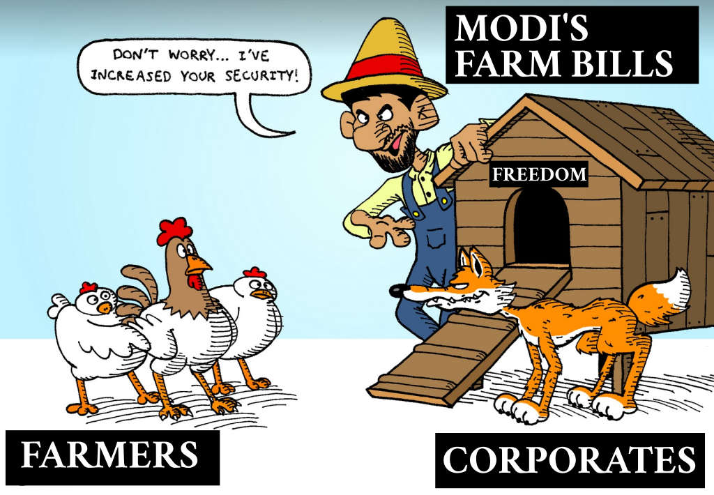

MIRROR — Farmer union's rebuttal of Indian Govt lies
Posted under Politics on

NOTE: This is a mirror of reply published by farmer’s union to counter the deliberate lies of Indian Govt led by Narendra Modi. I took the liberty of re-posting this in accessible manner. Link to the original document is available at the end of the article.
Background
Indian Govt. led by BJP recently passed 3 farm laws that affect millions of farmers with no consultation from farmers (or) thier unions. The goal of these laws is to destroy the protections most Indian farmers previously had & to pave way for corporate takeover of Indian farming market — further impoverishing already distressed farmers, increasing the prices for the end consumer & transferring all these profits into the pockets of those that fund Modi & his party. In other words, Modi sold Indian farmers to his pay masters in exchange for keeping him in power. Indian Govt. passed these unconstitutional laws (Agriculture is a state subject & Central Govt has no role in it) in an illegal & undemocratic manner.
Farmers are protesting across the country demanding the repeal of these laws that destory thier livelihoods while enriching Capitalists (both crony & non-crony). Now Indian Govt started a massive lying campaign thru mainstream media & social media to sabotage farmers protests & lie to rest of the society who dont have full context as to why farmers are opposing these laws.
What follows is the response of a farmer’s union — All India Kisan Mazdoor Sabha (AIKMS) — to the well-calibrated lies of Indian Govt led by Narendra Modi.
Farmer union’s view of Govt lies
Govt’s arguments for not accepting peasant demands of repealing three farm acts & electricity bill (EB) 2020 are deceptive and untruthful. Its claim of having addressed specific problems in the acts are bogus. It is propagating falsehood to claim that the laws help peasants (farmers).
Farmer’s demand: Repeal the three Farm Acts & Electricity Bill 2020
Farmer union’s detailed response to Govt lies
Since, June 2020, the peasantry of India has been agitating for repeal of the 3 New Farm Ordinances, passed into Acts in September, and the EB 2020. Despite massive mobilizations in several states and now the indefinite dharna by several lac peasants at the borders of Delhi, the Govt, through its ministers and experts and BJP leaders are continuously trying to belittle the peasant problems, giving out arguments based on wrong facts, complete misreading of the 3 acts and deliberately ignoring reference to the clauses being objected to. Their arguments are diversionary and pretentious and their claim that specific aspects have been addressed is bogus. TheGovt, as is its character,has also issued an online publicity document “Putting Farmers First”, to show how much Modi Govt has done for peasants. It is aimed at misguiding the country. We attempt here to put the facts straight.
We wish to inform, that the Delhi sit in has been preceded by strong mass protests in Punjab and all India protests on August 9, September 25, October 14, November 5 and others, all of which were ignored. Even Punjab govt tried to suppress the movement with arrests,but had to retreat as inthe present uprising all sections of people of Punjab. Agriculture continues to constitute an important aspect of the economic life of not only the land owning small, middle and rich peasants, but also affects large number of traders, small industry, workers, intellectuals, professionals.They feel that these laws will destroy the agricultural economic landscape of the country by handing over controls to the Big Indian and Foreign Corporate.
While it is being argued by pro Corporate lobbyists that this movement is only of rich farmers, it is motivated by unscrupulous Arhatiyas, it is sponsored by foreign funds and foreign powers, it is organized by opposition parties, is all wrong propaganda. The middle, small and marginal peasants constitute the main force of the agitation.
Point by point rebuttal
Govt claim: The govt. reforms are aimed at increasing private capital,infrastructure anddevelopment to reach villages and farms and that will benefit peasants. Govt. has allotted ₹1 lac crore for helping private investment in ware-housing and other infra structure. This will make villages Atmnirbhar.
The two acts — Farmers’ Produce Trade and Commerce(FPTC) & Contract Act clearly state that their aim is to promote private traders, corporate to establish private mandis and engage peasants in contracts. Now Corporate houses will have legal right to do so.
The Laws say that the govt. will promote private companies. Automatically the functioning of govt. mandis, supply of fertilizers, seeds, electricity, irrigation will be get de-promoted. Existing Govt sector is easily bribed into dysfunction in order to serve private and corporate interests. This has happened to Public Sector Industries, Airlines, Insurance, Telecom Services, Healthcare, Schools, Clean water supply and other civic facilities and is now happening in Electricity supply, Railways, Banking, etc. Govt welfare schemes are being largely undermined under the guise of handing over to Corporate Social Responsibility (CSR), whose performance is zero, but is never questioned. Wherever corporate has entered any service, govt sector suffers further losses, while the corporates make huge profits.
In all sectors, once govt facility becomes sick and non-functional, its assets are sold to the Corporates. This will happen to agriculture infrastructure also, viz the mandis, the irrigation facilities and FCI warehouses, amongst others. For last 20 years there have been attempts to privatize irrigation via Self Help Groups. Water from big Dams built for irrigation is being supplied to industry and cities. FCI suffers a loan of more than ₹3 lac crores, because over last 8 years its expenses have not been recleared by the govt from the food subsidy budget. All its assets will get sold.
Govt claim: Peasantry itself had asked for reforms. Now why oppose the laws?
The peasants had demanded improvement in mandi functioning, not ‘mukti’ from mandis. Now these mandis will perish.
Peasants have clearly stated they are opposed to any direct and further penetration corporate, MNCs, International Grain Traders in agriculture because they will raise input costs, depress crop rates, which will be decided through e-NAM and not the Govt. declared MSP (Section 5b of Contract Act) and will control the entire food chain. This will lead to higher cost of farming, higher losses, higher debts and displacement from land. Peasants will be ruined.
The new acts will legalise entry of Corporate and allow them to control farming process, input supplies, marketing of crops, food storage, food processing, processed food industry, etc. This will make all aspects village life Corporate Nirbhar.
Govt claim: We improved mandis. Farmers are being made a ‘market force’.
The actual improvements claimed in Mandis are only computerization and e-NAMs, which hardly bring any meaningful benefit to common peasants. The reforms sought by peasants in Mandis werefor better storage, transport, infrastructure, procurement assurance for all crops at MSP, end to corruption, more democratic functioning of Mandi Samitis, better institutional low interest credit facilities to save them from private credit of Arhatiyas, etc.
Govt claim of making farmers a market force cannot benefit the peasants if they are exposed to big traders and corporates. They will only become victims of corporate loot. Freedom of choice between a goat and a tiger is only for the tiger. APMC mandis were legally set up to protect them from big traders, who depress crop prices, knowing that the farmer cannot retain his crop and it is his compulsion to sell, as he has debts to clear and has to buy inputs for the next sowing. It was also to prevent excessive difference between farm and retail prices, as big traders tend to hoard and do black marketing.
Govt claim: Private mandis are only an alternative and there is no compulsion to sell over there. Farmers have the option to sell their crop anywhere now. He can take his crop to any state and sell it. Laws provide freedom of choice.
Private mandis will become the only option with a vast network of middlemen in all villages. Peasant never dictate prices, as their only option is the nearest available mandi and the available buyers there. They cannot bear the burden of transporting their crop to another mandi. Can sell anywhere is being stated only to fool those who may not be aware of the problems of farming, particularly those of urban middle class.
Govt claim: We brought parity between APMC and private mandis by proposing to allow state govts to tax private mandis, register all purchasers and contracts.
These are Central Act give legal freedom to big corporate to control all aspects on agriculture. As per the govt’s latest proposal, the onus of even minor checks on these companies will be fulfilled by the state govts, who will decide, depending on which parties are ruling. If all powers to check are with the state, then why is there a Central Act? Obviously, the role of Central Govt. and Central Acts is to promote corporate and MNC’s in agriculture, which can easily undo the checks by state as per need. Once companies gain access, it will be very difficult for the next govt. to undo it them.
Govt claim: In several states, like Bihar, there were no APMS mandis, there the farmers have no problem.
Bihar and several states have had no APMC mandis. But no state has given license to corporates to establish their private mandis, which is the main problem with these Acts. Because Punjab has APMC, farmers there got the MSP rate of ₹1868 per quintal. In most of UP and Bihar it is selling at ₹900 to ₹1200 per quintal to traders. They then sell it to big buyers and corporate. When Corporate Mandis will get established in all states, these prices will be depressed further.
Govt claim: During Modi’s rule in Gujarat it transformed lives of farmers.
During Modi period Narmada Dam water, which was meant to irrigate agricultural land, was largely diverted for industry and Sabarmati River Water Front. Every year farmers hold big protests for water supply which is cut off before the crops are ready.
The real picture of Gujarat’s Modi Model is revealed by several facts including the case of Missing Farmers in 2011 NSSO report which revealed that between 2001–2011 3.55 lac farmers had gone missing in Gujarat and there was a massive rise of 17 lac agricultural labour. Studies report that this landlessness increased due to promotion of export driven corporate farming. And worker wages were amongst the lowest in Gujarat, with urban labour getting ₹144 against a national average of ₹170 and of rural labour from ₹113 against a national average of ₹139. Female labour were paid only ₹69 per day.
Govt claim: Farmers will not lose his land. Section 15 on Contract Act clearly states that farmer will not lose land. The law can be strengthened.
The contract with the sponsor company does not include mortgaging of peasant’s land. But Sec. 9 of Contract Act provides for peasants to take loans from other ‘debt instruments’, as separate and parallel deals. For making payment to the sponsor company for the inputs provided by it to the peasant he will have to take loans and his land will be mortgaged.
Section 14(2)(b) of Contract Act provides that where the “order is against the farmer for recovery of the amount due to the Sponsor”, which may be on account of “any advance payment or cost of inputs”, “such amount shall not exceed the actual cost incurred by the Sponsor”. So, apart from cost of inputs or advance, the actual costs ‘incurred by the Sponsor’ will be recovered from the farmer! All recoveries will be made of arrears and land revenue as per Sec. 14(7) of this Act.
Govt claim: The laws create ‘better lives for farmers and jobs for rural youth’, referring to private investments for this.
Land of the peasants can only be saved if the govt gives an unsecured loan which no private company will give. With no provision for that in the Contract Act, it is likely that a parallel structure of money lenders serving these companies, but formally independent of it, like rise of mahajans during East India Company, will develop. If the peasant cannot get an institutional loan, then the burden on him/her to pay for services provided by the company will force him to take recourse to borrowing from other sources and in the process have to part with their land. Though this will formally not be part of the Contract agreement, but in reality, it will be very much essential part of it. Linkage between companies and money lenders can be multifaceted.
While creating conditions of peasants losing their land and become landless, Govt. says it is ‘creating more avenues for income generation’ and private investments will generate employment. How can there be better lives when land is lost? When companies invest in rural areas, they do not create infrastructure to help farmers to earn. They take over land for real estate, industrial use, in which only handful of jobs are created while thousands lose their land and livelihood. Most land taken in the name of industries is not developed and remains idle for long.
Govt claim: Acts will give written assurance that MSP and Govt procurement will continue & Modi govt. has already implemented Swaminathan Formula.
Modi govt. has failed to implement Swaminathan formula C2 cost + 50%. C2 cost is total cost of cultivation (including full labour cost, cost of depreciation of equipment, land rent, interest). Modi govt. itself claimed that in 2017 and 2018 the MSP declared was A2 + FL + 50%. For many crops the MSP declared was even less than this. A2 cost is payments made by the peasant and Family Labour of 8 days. Modi govt. gave an affidavit in Supreme Court that it cannot pay C2 + 50% because food cost will rise.
Peasantry’s demand is to increase MSP at C2 + 50% for all crops and ensure that all peasants get the MSP rate for their crops. Presently govt. declares MSP for only 23 crops, only few peasants get its benefit as implementation is only in some areas and is tardy.
Govt. spokespersons and experts are claiming that the country has excessive food stock, more than 2.5 times than what is required. There is no space to store food. It cannot buy so much wheat, paddy, pulses, etc. Obviously, the govt. does not want to buy and its claim of continuing MSP and procurement is a complete hoax.
Govt’s lie is further nailed by its own document, PFF which says ‘ensure proper prices for produce’. It does not even say — ensure MSP is given.
Govt claim: Acceding to demand for MSP will raise food costs.
Govt is trying to deny MSP at C2 + 50% in the name of keeping food costs low for the poor people. Giving C2 + 50% as MSP will not make food costly if input costs are decreased proportionally. This will afford savings for farmers and agriculture will become sustainable. But govt wants to allow corporate to sell costly inputs and keep the food costs lowby depriving peasants of profitable MSP. Thus, at both ends the peasant is squeezed and Corporate profit is secured. The Govt’s logic of not giving MSP is to pit workers against peasants andserve the interest of corporate. They will reap the benefit of selling inputs to peasants at high cost as well as buy cheap crops which keep both industrial inputs and wages cost low.
Govt claim: Farmers can fix prices for produce even before growing it.
Monopsony i.e. one buyer and many sellers cannot create condition for peasant to bargain and fix prices. To say that the peasant can dictate at the time of the Contract is absurd, because the Companies always have a better idea of prices and they fix what is profitable to them. Moreover, at the time of purchase, there are many provisions for the company to deny the price fixed in the contract.
Govt claim: Acts will double by 2022. Input cost have been decreased.
Diesel cost has been increased tremendously by Modi govt, even though international prices crude oil have fallen $110 per barrel in 2014 to $40–50 per barrel now. Today total tax on diesel and petrol is around 50 rupees, which is about 65% of the price of fuel. Ready to sell petrol in India was ₹24.62 while diesel was ₹26.02 in May end this year. The tax includes central excise duty of ₹32.98 on petrol which was only ₹9.20 in November 2014 and ₹31.83 on diesel which was only ₹3.46 in November 2014. Fuel prices in Pakistan, Bangladesh, Srilanka are cheaper than in India. Diesel effects tilling, irrigating, harvesting and transports costs. Though there is little variation in increase in different fertilizer prices, seeds, insecticides and farm equipment are sold by companies at very high costs. It is not regulated by the govt. Every year the prices are raised and peasants have to take loans to pay for these.
Govt claim: Old system of APMC was brought in when there was food shortage. Now we are food surplus and we need to change and move ahead.
Food surplus is a big lie. Every year India is falling in the list of world hunger index. This year it is 94 out of 107 countries, which is even below Srilanka, Bangladesh and Pakistan. More than 68% of deaths in under five children in India are due to malnutrition (Lancet). The most recent National Family Heath Survey released two days backshows that since 2015–16 percentage of under five children who are stunted remains at 36%, showing no improvement at all. Stunting in under-fives is almost entirely due to poor nutrition and reflects status of food availability in society. There is also no improvement in Infant Mortality Rate during these 5 years, which also reflects status of nutrition and health care.
Govt claim: New system is revolutionary as it does away with middlemen who exploited farmers, charged commission to raise prices. Fragmented structure of markets also led to high cost for consumers and depressed prices received by farmers.
The farmers complaint was against high interest private usurious loans. The solution was cheap inputs and cheap loans. The govt has not done that. It is tricking the people by saying middlemen’s commission charges raised food prices. The difference between what a farmer gets and what the consumer buys is at times in multiples and is mainly dueto high transport costs, illegal taxes extracted by the officials and due to hoarding and black marketing. Commission charges are only a maximum of 8.5%, which is nothing. Farmers always receive very low prices when the market is monopolized by big buyers, even when there is shortage in the market. High cost to consumers too is driven by monopoly control by companies.
Govt claim: FPOs, Farmer Producer Organizations are a revolution as they empower the farmers.
Farmer Producer Organizations, FPOs were made to empower farmers, but this can happen only if they function as farmers cooperatives with govt. support. Section 10 of the Contract Acts list FPOs and Agriculture Cooperative Societies to function as “aggregator and farm service provider”. That is a middlemen orbichauliya for companies to aggregate crops; to supply inputs and services (Section 2, Contract Act); to operate private mandis; to determine “quality, grade and standards for pesticide residue, food safety standards, good farming practices and labour and social development standards” and certify the (crop assayer - Section 4 Contract Act); and Section 5 of the FPTC Act provides for FPOs, to own and operate the private mandis and to decide rules and guidelines for fair trade practices, decide mandi charges, etc. They will become middlemen of the corporate to exploit farmers, with no Govt control.
Govt claim: In the Contract Act if market prices go up, farmer can sell outside the contract. If market prices fall the sponsor company will have to give the contracted rate. Central Govt’s document, PFF claims ‘contractors cannot end agreement without full payment’.
Both claims are total lies and baseless. Sections 4 and 6 of Contract Act clearly states that at the time of purchase quality and rate of crop will be assessed by a ‘assayer’ who can be notified in the contract is signed or appointed later. Obviously, companies will have a larger say in such appointment. It will be his job to assess and settle the payment to be made and will not be the ‘full payment’ as per the rate in the contract.
Govt claim: Buyers must pay on time of face or legal action.
This also is wrong. Section 6(3) of the Contract Act allows taking the crop by only by issuing the receipt slip, while the mode and manner of payment can be decided by the state govt. It also grants 30 days time for payments for seed production. FPTC allows buyer to delay the payment by 3 days after taking the crop and issuing a receipt. It also allows delay in payment till such time as the FPO or Agri Coop receives payment from the person he further sells the crop to. Section 4 (3) states that “Central Government may prescribe a different procedure of payment by farmer producer organization or agriculture co-operative society, by whatever name called, linked with the receipt of payment from the buyers”. We know how Sugar Mills delay payments for years.
Govt claim: Farmer can end agreement in any time
This claim is a blatant lie and the law is clear. The peasant is bound by the contract terms and will be prosecuted under the Act. Moreover, when the first step in the implementation of the agreement is that the farmer pays the company for inputs, how can he end it?
Govt claim: These Contracts are only an alternative and if the farmer chooses he can refuse to enter a contract.
The farmers are and will be lured into these contracts and will learn about them only when they suffer losses. Entire experience of contract farming with some commercial crops like flowers, oranges, potatoes, tomatoes, eucalyptus plantations,etc in Punjab, Gujarat, Karnataka, UP and other states has been of some initial gains to farmers. Invariably this has led to growth in contracts and invariably farmers have suffered heavily later and many have lost their land. This happened on a big scale in Punjab. In Gujarat, 9 farmers were sued for a ₹1 crore rupees, for using the FC-5 potato seed, without permission from Pepsico.
Secondly, the govt. has been claiming all along that these Acts are creating a new system for benefit of farmers. Question arises that while the old inadequate system which failed the farmers will perish, and the new system ‘may not be opted for by the farmer’, then what new system/ opportunity/ have these laws given the farmer?
Govt claim: Exports will help farmers. They will become part of value chains.
Exports will help traders and companies. Tied to Giant value chains and exporters, it is these companies who will benefit from cheap and assured purchase from the farmer who will be contracted to sell. The farmer will neither sell directly to the consumer, nor will he/she export. The companies will do that.
Moreover, freedom to export and import given to these companies means they will source cheapest food from international markets and refuse to buy Indian farmers’ produce, thus affecting production here and jeopardizing food production and security of the country.
The Govt gives slogan of Atma Nirbharta of farmers will increase, actually meaning there by that their dependence on the Govt support will end. Design is to make Agriculture, Agro Processing and Marketing completely Corporate Nirbhar.
Govt claim: These laws will ‘see India’s agriculture and food processing industry being reformed’. ‘Private investments will pour in across entire cold chain, providing efficient and cheaper resource supply, reducing losses and ensuring better prices for farmers’.
While it is correctly said that these laws have been made for agro processing industry to grow and for better private investments, this is precisely the fear of farmers. Although the Govt says it is to provide more opportunities to farmers, page 16 of the Govt document, PFF, confesses who these reforms are meant for ‘Just imagine the kind of new avenues that are going to open up for agri business with these reforms’. The private investor giants will invest to make profit, not to give better prices to peasants.
The demand of farmers and rural youth is that govt should provide for cost-based technology and inputs directly to the peasants or through the Cooperative sector. In Punjab there is a big demand that since every peasant has to own a tractor, other machinery and pumps, these should be supplied by the Govt, to bring down input costs, i.e. providing efficient and cheaper resources. If companies provide resources, they will do so at very high cost, which will ruin the farmers.
Rural transformation does require development of Food Processing Industry. The Farmers demand is that the govt must provide its infrastructure and structure for marketing and allow peasants to earn from food processing. Only then can it improve farmers’ income, not by asking Corporate to invest.
Govt claim: Removed food items from the Essential Commodities Act to make farmers benefit from high prices.
Food is the most Essential Commodity for survival. Unchecked, traders and companies indulge in unscrupulous hoarding and black marketing, raising cost of food and leading to starvation and hunger deaths. During last two decades India has witnessed large number of hunger deaths. Some facts on food insufficiency have been noted above.
Having removed food grains from list of Essential Commodities, hoarding, black marketing and other unfair trade practices will rise. It will benefit only agro processing companies and big traders. How PM Modi feels farmers will benefit from this immoral, anti-people change is not clear. This will harm both the farmer and the consumer and help only the Corporate and MNC food giants.
The changes in EC Act allow for 50% hike in annual dry food (cereals, pulses) prices and 100% hike in vegetables and fruits. This is the new written law now.
The EC Act also raises doubts about continuation of the Targeted PDS rules, for which it states ‘for the time being in force’. Winding up of PDS will force more than 75 crore beneficiaries to buy from open market controlled by the Corporate.
This logic of the Govt is again to pit farmers against workers. While Food costs will tend to rise high, farmers will not benefit as they will be bound by contracts and Corporate control over mandis.
Govt claim: Modi govt has done a lot for farmers in terms of PMKISAN, PMFBY, rural credit growth, pension schemes, loan waivers, MNREGA funds, etc.
Each scheme of the Govt has been planned only under pressure of farmers movement. Each has been saddled with large propaganda, poor performance and large scale corruption.
The fact is that the farmers have still become the most powerless citizens in India. They are on the streets today to save their land and retention of some old privileges in law, which are going to be undermined by these new 3 Farm Laws and EB 2020. The govt must withdraw them. Only then can there be any dialogue on what changes to make which will benefit the farmers.
All India Kisan Mazdoor Sabha appeals to you to come out and support the peasants in their struggle against the Corporate and MNCs.
Credit
Publisher:
Central Executive Committee, All India Kisan Mazdoor Sabha (AIKMS), (Kirti Kisan Union, Punjab), Member of All India Kisan Sangharsh Coordination Committee (AIKSCC)
Author:
Dr. Ashish Mital, General Secretary, AIKMS
Published on:
19th Dec 2020
Original:
Comments